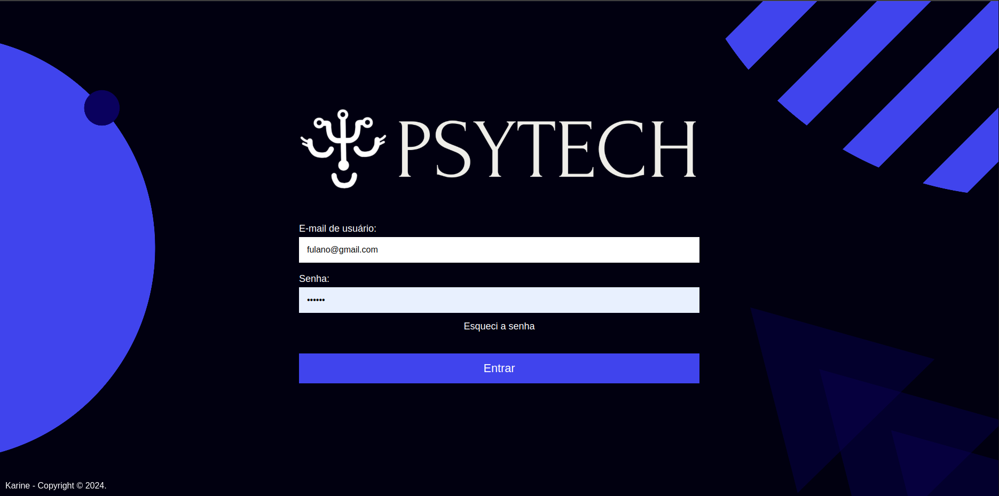
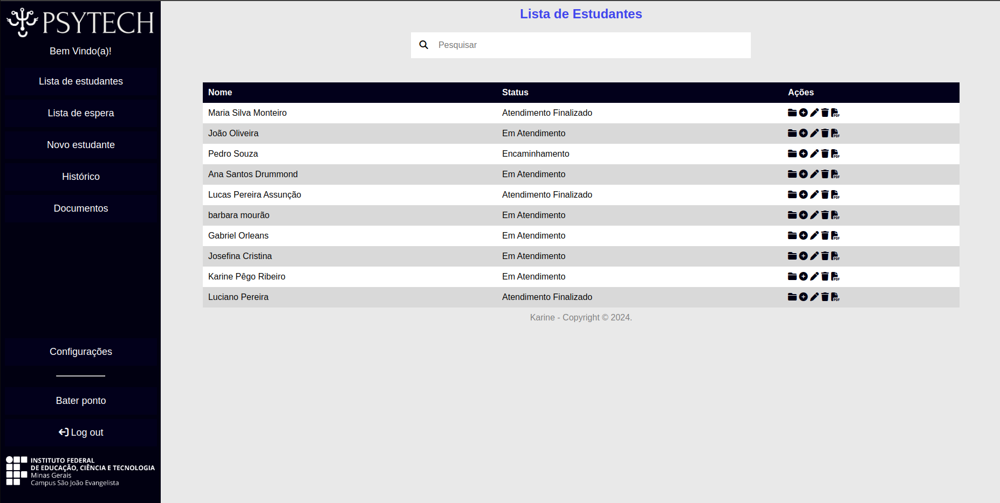
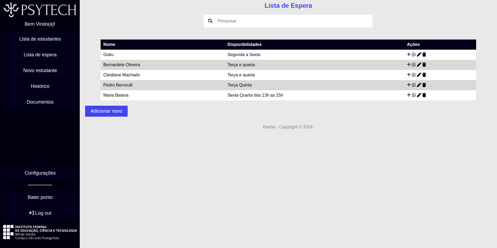
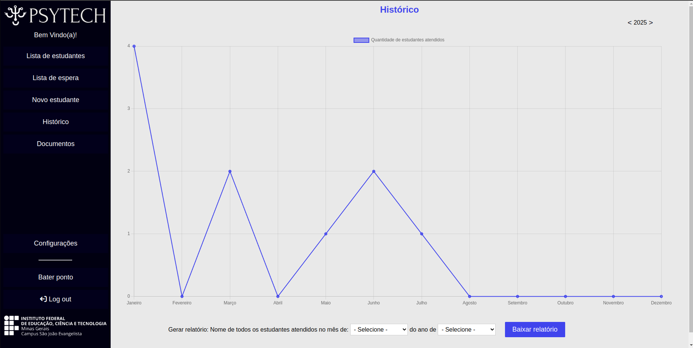
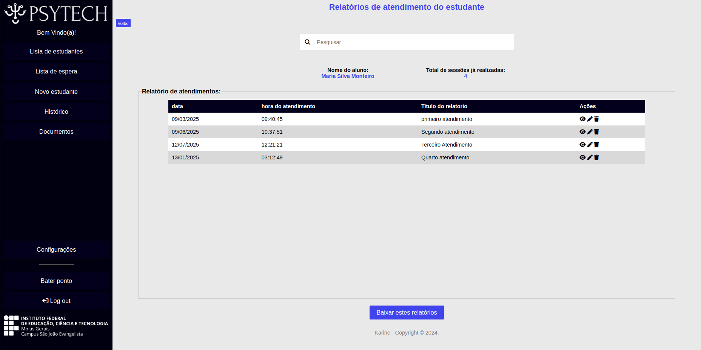
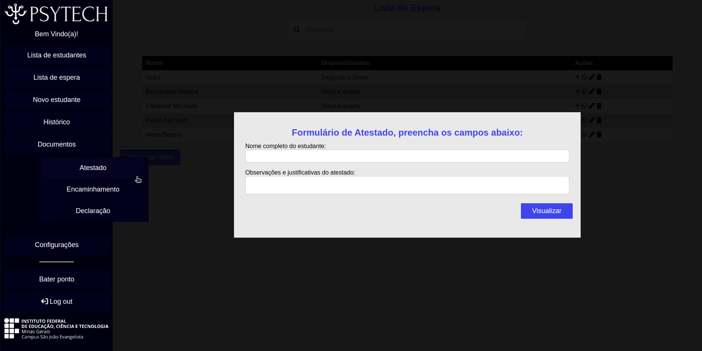

Trabalho de Conclusão de Curso (TCC)
Este projeto foi desenvolvido como Trabalho de Conclusão de Curso (TCC) para o IFMG - Campus São João Evangelista. Trata-se de uma aplicação web criada para uso exclusivo do psicólogo educacional do setor de psicologia do campus.
A plataforma permite ao profissional cadastrar, editar e excluir informações dos alunos sob sua responsabilidade, além de gerar relatórios nos formatos PDF e Word. Também é possível visualizar gráficos baseados nos dados cadastrados, como, por exemplo, o número de atendimentos realizados em determinado mês.
A aplicação conta com um sistema de login e senha, garantindo acesso seguro às funcionalidades. O psicólogo também pode fazer upload de documentos relacionados aos alunos, como laudos, registros e outros arquivos pertinentes.






Bibliotecas Utilizadas:
Hydrahon, Chart.js, PHPWord.
Gostou deste projeto?
Ele está disponível no GitHub com visualização privada e documentação completa. Vamos conversar sobre como posso aplicar essas tecnologias na sua ideia!